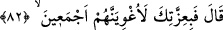

azâbdan korktuğu içindir. Ancak isteğine kavuşunca lânete uğramasının sebebi Âdem
olduğundan, Âdemoğullarından öç almak için onları aldatacağını açıklamıştır.
Âyet-i kerimede Allah’ın kovup uzaklaştırdığı herkesin tutum ve davranışlarının
(ahvâl) da tersyüz olacağına ve sonuçta bir şakî (bedbaht, cehennemlik) olmasını
gerektirecek hususları kendisine çekeceğine işâret edilmektedir. Nitekim İblis tam bir
şakî olduğundan, -o uzun sürenin câzibesine kapılıp “gelecek her şeyin yakın olduğu”
gerçeğini gözardı ederek- azâba dûçâr edilmesini gerektirecek günahları kıyamete kadar
artsın diye kendisine süre tanıması için Rabbine yalvarmıştır.
Her ne kadar ömür uzun olsa da ölüm yaklaşınca ömrün uzunluğunun bir faydası
yoktur. Nuh (a.s) 1000 sene yaşamıştır, şimdi ise öleli kaç bin yıl olmuştur.
Vah yazık ki değerli ömür geçti,
Bu (kalan) birkaç anlık zaman da geçecektir.
Allah da kendisinin Rubûbiyyetini gündeme getirerek talepte bulunduğu için İblis’in
duâsını kabul buyurarak ona bir süre tanımıştır. Böylece Allah, kendisinden Rab ism-i
şerîfiyle bir şey isteyenlerin duâsını kabul edeceğini göstermiştir. Tıpkı İblis’in
“Rabbimiz, bizler nefsimize zulmettik” (el-A’râf 7/23) diye yalvaran Âdem’in duâsını
kabul buyurduğu gibi. Nitekim “Sonra Rabbi tevbesini kabul etti ve doğru yola
yöneltti” (Tâhâ 20/122) buyrulmuştur.
82. İblis: Senin mutlak kudretine andolsun ki, hepsini mutlaka azdıracağım, dedi.
Hakettiğini bulasıca “İblis: Senin mutlak kudretine” şânına, kahır ve gücüne
“andolsun ki, hepsini mutlaka azdıracağım, dedi.”
İblis’in ifâdesini hikâye yoluyla aktaran “öyle ise beni azdırmana karşılık” (el-A’râf
7/16) âyeti ile bu âyet arasında bir tezad yoktur. Zira İblis’i Allah’ın azdırmış olması
O’nun kudret ve izzetinin bir eseri olup kahır ve saltanatının bir hükmüdür. Bu gizli
nükteden dolayıdır ki, yemin edilmeye lâyık pekçok sıfat dururken izzet-i ilahiyye
üzerine yemin edilmiştir.
et-Te’vîlâtü’n-Necmiyye’de der ki: İblisi tam bir şakî olduğundan dolayı Allah’ın
izzetine yemin etmiştir. O’nun izzetini tanımış olsaydı, O’na karşı çıkarken bu sıfatla
yemin etmeyi tercih etmezdi. Âdem’in tüm züriyyetini, mâsiyetleri süsleyip içlerine şek
ve şüphe tohumları ekerek azgınlığa, yâni rüşdün zıddı olan gayy’a yönlendirecek ve
bunların azmasına sebep olacağım. “İğvâ”, yolu saptırmak demektir.
Sonra aşağıdaki istisnâyı yapmak sûretiyle doğru söylemiş oldu: